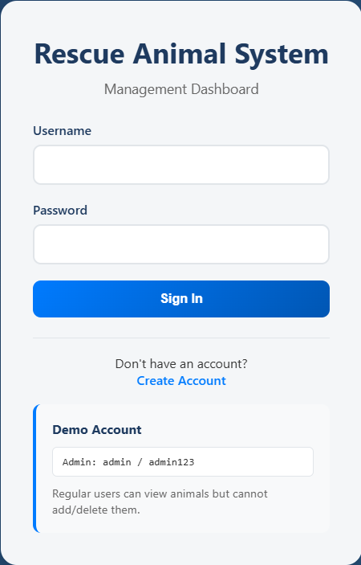
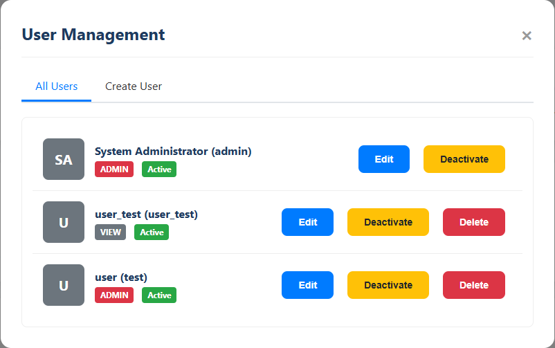
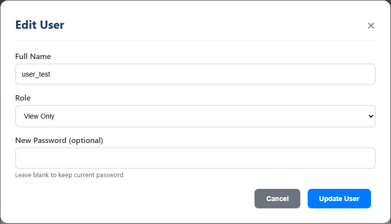
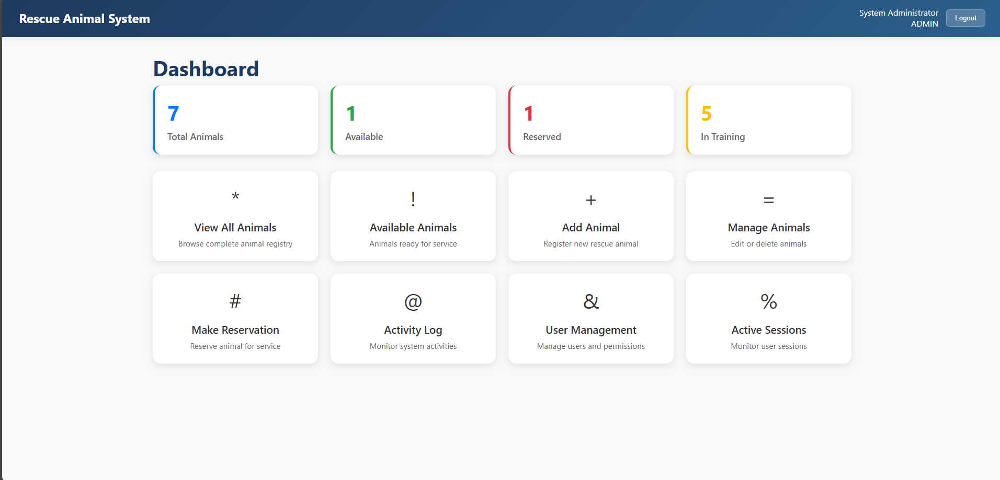
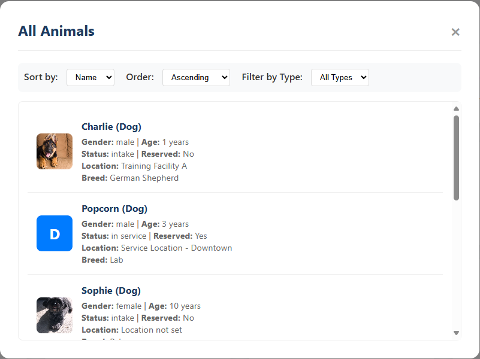
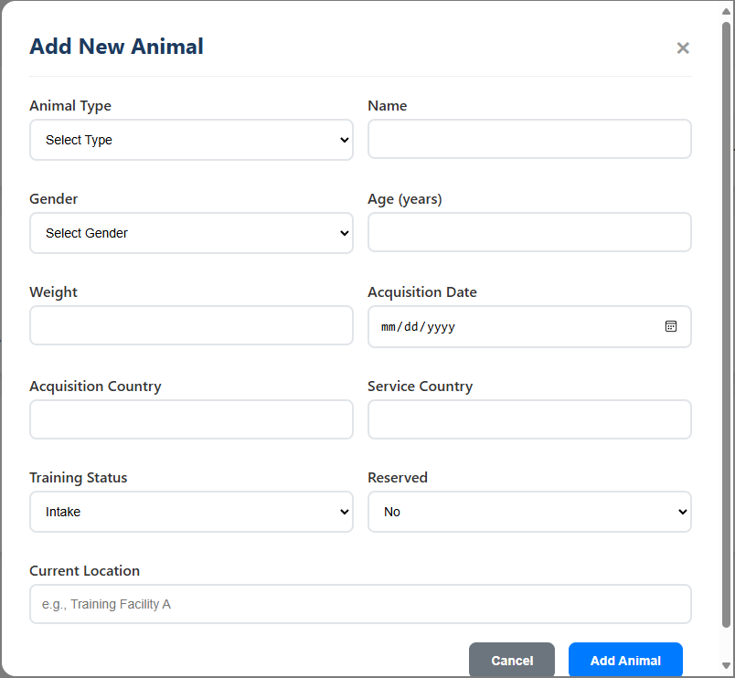

Algorithms and Data Structures
IT-145 Foundation in Application Development
Overview:
IT-145: Foundation in Application Development is a perfect project to demonstrate the overall knowledge of algorithms and how to demonstrate algorithms within an application. It allows for an overall understanding of how algorithms can be introduced within a database of animals with variables assigned to the animals in terms of age, location, gender, and other related data needed to demonstrate unique characteristics of the animals. This was originally a text-based project converted to a web-based UI and demonstrates the overall understanding of algorithms and how to build upon an application to increase efficiency and increase user read-ability.
Enhancements:
- Convert text-based (terminal command line) layout to a web-based layout to increase user friendly UI and efficiency utilizing the application and create an overall better user experience throughout.
- Create more objects to utilize throughout the application in terms of new animals to increase the overall animal type count of the animal shelter
- User permission system to allow for administrators to give permissions to newly created user accounts and allow users to only be able to view animals instead of editing whereas administrators can do all functions/features.
- Create more utility functions to utilize throughout the application instead of relying on deprecated functions and functions that are not overall efficient in terms of operating properly. Create more efficient functions that allows for faster manipulation of the data and manipulate the data of specific variables.
User Management System:
The user management system is based off of a 4 level system (starting at 0 for basic permissions). The administrators have full access over the system, they can create/remove animals, manipulate user permissions for created accounts to change accounts to administrators or change the overall permissions on accounts and even changing passwords if needed. The staff permission can modify animals and create reservations. The monitors permission can only view and track animal activities throughout the shelter, and the view access is for users to only view the animals the shelter has, that is the most basic permission and only allows to view animals and not track activity.



UserRole.java
public enum UserRole {
VIEW(0), // Can only view data, cannot modify
MONITOR(1), // Can view and track activities
STAFF(2), // Can add/modify animals and reservations
ADMIN(3); // Full access including user management
private final int level;
UserRole(int level) {
this.level = level;
}
public int getLevel() {
return level;
}
}Web-Based Application:
The Animal Shelter application developed through IT-145 was a text based application that parsed data and utilized commands throughout the terminal to manipulate the data and parse the data as needed such as gathering animal data and changing animals throughout the database. It parses data from the database and creates animal objects utilizing the animal classes such as cats and dogs. We have changed the terminal based application into a dynamic changing web-based application. We utilize a form of web-based HTML files that change dynamically depending on the data parsed in real time. It allows for a better overall graphical interface and a better overall user friendly design instead of terminal commands, you can now visualize it better. We have also introduced new animals such as monkeys, birds, and rabbits.



WebApplication.java
private static void createDynamicHtmlFiles() throws IOException {
String indexHtml = getLoginPageHtml();
Files.write(Paths.get("web/index.html"), indexHtml.getBytes());
System.out.println("Created dynamic index.html");
String dashboardHtml = getEnhancedDashboardHtml();
Files.write(Paths.get("web/dashboard.html"), dashboardHtml.getBytes());
System.out.println("Created enhanced dashboard.html");
} private static boolean setupWebEnvironment() {
try {
System.out.println("Setting up web environment...");
createDirectory("web");
createDirectory("web/css");
createDirectory("web/js");
createDirectory("web/images");
createDirectory("data");
createDynamicHtmlFiles();
System.out.println("Web environment setup complete");
return true;
} catch (Exception e) {
System.err.println("Error setting up web environment: " + e.getMessage());
e.printStackTrace();
return false;
}
}